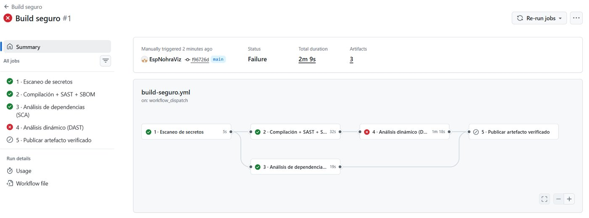
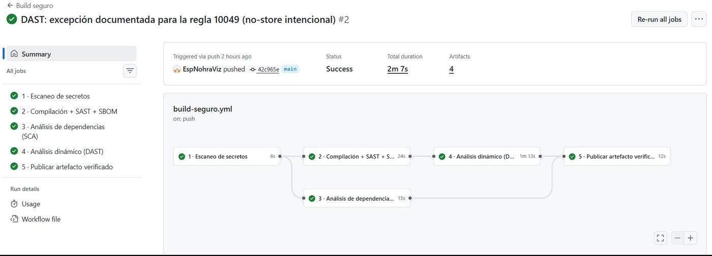
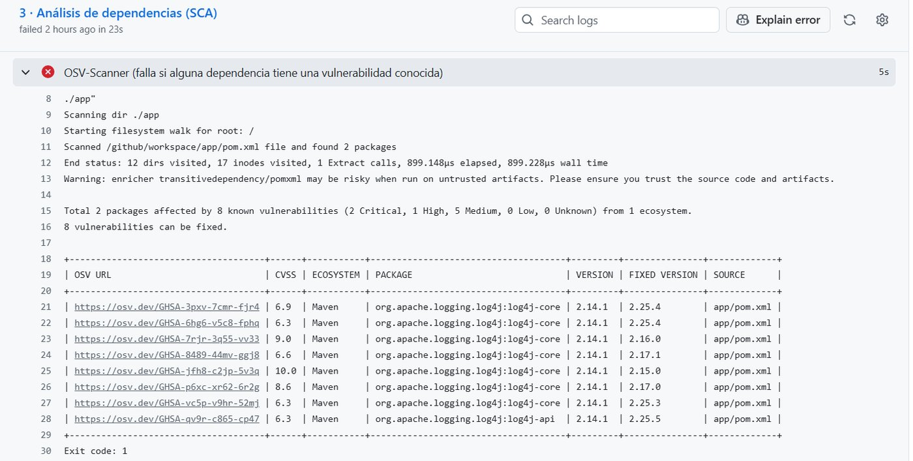

Fijar por hash
Cada herramienta del pipeline se referencia por el hash de su versión, no por una etiqueta que alguien podría mover.
uses: actions/checkout@3d3c42e5… # v7.0.1Cartilla digital · Desarrollo seguro de software
Recomendaciones para asegurar el proceso de compilación y las dependencias del software
Build seguro: que no compile lo inseguro
Cartilla digital sobre recomendaciones de desarrollo seguro centradas en el proceso de compilación y las dependencias del software.
Las ilustraciones, diagramas y capturas de esta cartilla son de elaboración propia, a partir del caso práctico publicado en el repositorio indicado. Las fuentes consultadas se citan en el texto y se listan en las referencias, según normas APA 7.ª edición.
Durante años, la seguridad del software se ha medido casi exclusivamente por la calidad del código, es decir, que pase la revisión, que no tenga inyecciones y que valide bien las entradas. Eso sigue siendo necesario, pero ya no alcanza. Hoy buena parte del riesgo entra por otro lado, a través de las librerías de terceros que se incorporan sin revisarlas y del propio proceso que convierte el código fuente en el artefacto que llega a producción. En mis años de experiencia desarrollando y dando soporte a aplicaciones, he visto cómo una aplicación se vuelve obsoleta y cómo sus librerías van presentando fallas de seguridad que terminan volviendo vulnerables los sistemas. Ortega (2018) señala que desarrollar aplicaciones seguras, sobre todo cuando están expuestas a Internet, es la mejor defensa que tiene una organización frente a los ciberataques (p. 61). Esta cartilla parte de esa idea y la lleva un paso más allá, porque además de escribir código seguro, hay que construirlo de forma segura.
El propósito de la cartilla es ofrecer recomendaciones prácticas para asegurar el proceso de compilación y las dependencias del software, y mostrar cómo se aplican en un proyecto real. Está dirigida a desarrolladores, líderes técnicos y equipos que mantienen aplicaciones en producción, en especial en entornos Java Maven, aunque los principios sirven para cualquier tecnología. También puede ser útil para estudiantes que empiezan a acercarse a las prácticas de DevSecOps.
El contenido toma como eje la práctica Secure Build del modelo OWASP SAMM, que plantea construir el software de manera estandarizada y repetible, con componentes seguros, incluidas las dependencias de terceros (OWASP, 2020, p. 138). Primero se presenta el mapa de madurez de esta práctica. Luego, en cuatro capítulos, se explica cómo definir formalmente el proceso de compilación, cómo automatizarlo y proteger las herramientas que lo ejecutan, qué comprobaciones de seguridad deben ser obligatorias y cómo evaluar las dependencias. El quinto capítulo presenta el caso práctico, un pipeline en GitHub Actions que detiene el build cuando encuentra código inseguro, una librería vulnerable o una configuración débil. El sexto compara el análisis estático con el dinámico y, al final, se presentan las conclusiones.
La importancia del tema la confirma la propia comunidad de seguridad. En el OWASP Top 10 de 2025, las fallas en la cadena de suministro de software ocupan el tercer lugar, fueron la categoría más votada como primera prioridad en la encuesta comunitaria y tienen la tasa de incidencia promedio más alta en los datos analizados (OWASP, 2025). Casos como Log4Shell, en 2021, demostraron que una sola librería de registro de eventos puede dejar expuestas miles de aplicaciones cuyos equipos nunca escribieron una línea de código vulnerable.
«El código se revisa; el build se demuestra».
Antes de empezar
OWASP SAMM (Software Assurance Maturity Model) es un modelo abierto que ayuda a las organizaciones a analizar y mejorar la seguridad de su software de manera gradual. Está compuesto por quince prácticas de seguridad agrupadas en cinco funciones de negocio, y cada práctica tiene actividades organizadas en tres niveles de madurez (OWASP, 2020, p. 13). El modelo no exige llegar al nivel máximo en todo, sino que cada organización define la meta que mejor se ajusta a su realidad (OWASP, 2020, p. 12).
Dentro de la función de Implementación se encuentra la práctica Secure Build, que se enfoca en lograr un proceso de compilación consistente y repetible, y en tener en cuenta la seguridad de las dependencias de la aplicación (OWASP, 2020, p. 136). Esta práctica se divide en dos líneas de trabajo. La primera busca eliminar cualquier subjetividad del proceso de compilación por medio de la automatización, y la segunda reconoce el peso que tienen hoy las librerías externas y busca identificarlas y hacer seguimiento a su estado de seguridad (OWASP, 2020, p. 138). La figura 1 resume lo que se espera en cada nivel y sirve como mapa para los capítulos que siguen.
Para que estas recomendaciones no se queden en la teoría, la cartilla las acompaña con un caso práctico. Se trata de un pequeño servicio web en Java Maven para consultar el estado de un radicado, publicado en un repositorio de GitHub junto con un pipeline de integración continua que lo compila, lo analiza y solo genera el artefacto final cuando pasa todas las comprobaciones de seguridad. En cada capítulo se muestra cómo se aplicó la recomendación en este proyecto, y en el capítulo 5 se presentan los resultados de ejecutar el pipeline.
Capítulo 1
Definir formalmente el proceso de compilación significa dejar de depender de la memoria de quien compila. SAMM propone descomponer el build en un conjunto de instrucciones claras, que pueda seguir una persona o una herramienta automatizada, y que describan el proceso completo de principio a fin para que cada ejecución produzca el mismo resultado (OWASP, 2020, p. 141). Esa definición debe estar en un lugar central y accesible, sin copias sueltas que se desactualicen, y nunca debe contener secretos, como contraseñas o llaves que se usen durante la compilación.
En un proyecto Java Maven esto se logra tratando el build como código. En el servicio de consulta de radicados que se usa como ejemplo, el archivo pom.xml es la receta completa, ya que declara la versión de Java, fija la versión de cada plugin, define las reglas que debe cumplir el propio build y encadena las fases de validación, compilación, pruebas, empaquetado y análisis (figura 2). Incluso la fecha de salida del artefacto está fija, de modo que dos compilaciones con las mismas entradas generan el mismo archivo byte a byte.
SAMM añade dos recomendaciones que suelen olvidarse. La primera es verificar que las herramientas de compilación sigan mantenidas por su fabricante y al día con los parches de seguridad, y la segunda es calcular para cada artefacto un valor que permita comprobar su integridad más adelante, como una firma o un hash (OWASP, 2020, p. 141). En el caso práctico, Dependabot revisa cada semana si hay versiones nuevas de las herramientas, y cada artefacto publicado va acompañado de su huella SHA-256. Ortega (2018) explica que cualquier cambio, por pequeño que sea, altera por completo la huella digital de un documento (p. 62), y esa es precisamente la propiedad que permite detectar si un artefacto fue modificado después de construirse.
Lista de verificación · ¿Tu build está definido formalmente?
Adaptado de OWASP (2020, p. 143).
Capítulo 2
Un proceso de compilación que depende de pasos manuales es frágil. Basta con que alguien olvide un paso, use una versión distinta de una herramienta o compile desde su propio equipo para que el artefacto que llega a producción ya no corresponda con el código revisado. Por eso SAMM, en su nivel 2, recomienda automatizar el build para que pueda ejecutarse de manera consistente en cualquier momento y sin intervención humana, lo que reduce aún más la probabilidad de error (OWASP, 2020, p. 144). Además, la automatización permite aprovechar el pipeline para incorporar controles de seguridad, como el análisis estático, en cada ejecución (OWASP, 2020, p. 145).
Sin embargo, automatizar tiene un costo que no siempre se ve. Cuanto más se confía en el pipeline, más importante es protegerlo, porque una herramienta de compilación expuesta podría permitir que un atacante altere el proceso e inserte código malicioso en el software (OWASP, 2020, p. 144). El caso de SolarWinds en 2019 es el ejemplo más conocido, ya que los atacantes comprometieron al proveedor y, a través de una actualización que los clientes instalaron con confianza, llegaron a cerca de 18 000 organizaciones (OWASP, 2025). En otras palabras, el pipeline también es una superficie de ataque y debe protegerse como cualquier sistema en producción.
En el caso práctico, el pipeline se definió en un archivo de GitHub Actions dentro del mismo repositorio, de modo que cualquier cambio en él queda versionado y puede revisarse como el resto del código. Para proteger la cadena de herramientas se aplicaron además cuatro prácticas, que se resumen en la figura 3.
Cada herramienta del pipeline se referencia por el hash de su versión, no por una etiqueta que alguien podría mover.
uses: actions/checkout@3d3c42e5… # v7.0.1El token del pipeline solo puede leer. Únicamente la etapa que firma recibe permisos adicionales.
permissions:
contents: readCada ejecución corre en una máquina nueva que se destruye al terminar: no quedan secretos ni estado entre builds.
runs-on: ubuntu-24.04La procedencia del artefacto se firma con un certificado de corta vida emitido tras autenticarse, sin custodiar llaves permanentes.
id-token: write
attestations: writeFigura 3. Cuatro prácticas para asegurar la cadena de herramientas, aplicadas en .github/workflows/build-seguro.yml. Elaboración propia.
Capítulo 3
Agregar herramientas de seguridad al pipeline sirve de poco si sus resultados se pueden ignorar, porque un reporte que nadie revisa no detiene ninguna vulnerabilidad. Por eso, en el nivel 3, SAMM propone definir comprobaciones de seguridad obligatorias y un criterio mínimo para aprobar el build, y hacer que el proceso falle cuando ese criterio no se cumple (OWASP, 2020, p. 147). Con esto, la seguridad deja de ser una recomendación y se convierte en una condición para que el software exista.
El impacto de esta decisión es directo. Un artefacto que no cumple con la línea base de seguridad simplemente no se genera, por lo que no puede desplegarse por error ni por presión de tiempo. Los problemas se detectan en el mismo momento en que se introducen, cuando corregirlos cuesta menos, y la responsabilidad queda clara porque el pipeline indica qué control falló y por qué (figura 4).
Esto no significa que cualquier hallazgo deba bloquearlo todo. SAMM recomienda fijar una severidad máxima aceptada, generar advertencias para los problemas que están por debajo de ese umbral y registrarlas en un sistema central para hacerles seguimiento (OWASP, 2020, pp. 147-148). También admite un mecanismo de excepción cuando un riesgo ya fue aceptado o mitigado, siempre que se apruebe de forma explícita y quede registrado con su justificación (OWASP, 2020, p. 147).
En el caso práctico esto ocurrió desde la primera ejecución. El análisis dinámico generó una advertencia porque las respuestas del servicio no se pueden almacenar en caché, algo que se configuró así a propósito para que los datos de los radicados no queden guardados en el navegador. Mientras no se resolvió, la publicación del artefacto quedó bloqueada, aunque la compilación y los demás análisis habían pasado (figura 5). En lugar de desactivar el control, se registró una excepción documentada en el archivo de reglas, tal como lo propone SAMM.

Capítulo 4
Una aplicación moderna está hecha, en su mayor parte, de código que su equipo no escribió. Cada librería que se agrega trae a su vez otras dependencias, llamadas transitivas, y cualquiera de ellas puede convertirse en la puerta de entrada de un ataque (figura 6). Ortega (2018) ya incluía este riesgo en la categoría A9 del OWASP Top 10, que agrupa las vulnerabilidades que se presentan al usar componentes con fallas conocidas (p. 91). Esa misma categoría evolucionó hasta convertirse en la A03:2025, que hoy abarca todas las fallas de la cadena de suministro del software y no solo las vulnerabilidades conocidas (OWASP, 2025).
El primer paso es saber qué se está usando. SAMM recomienda llevar un registro de todas las dependencias que llegan a producción, conocido como lista de materiales o SBOM, con datos como dónde se usa cada una, su versión, su licencia, su origen y si sigue teniendo soporte (OWASP, 2020, pp. 149-150). En el nivel 2 propone ir más allá, con una lista de dependencias aprobadas, revisiones periódicas y una regla clara, que consiste en tratar cualquier no conformidad como un defecto y apoyarse en herramientas automáticas que detecten las librerías vulnerables (OWASP, 2020, pp. 152-153). En el nivel 3, el pipeline debe fallar cuando una dependencia tenga problemas por encima de la criticidad definida (OWASP, 2020, p. 156).
Log4Shell mostró por qué esto importa. La vulnerabilidad CVE-2021-44228 en Log4j, una librería de registro de eventos presente en miles de aplicaciones Java, se ha relacionado con campañas de ransomware, minería de criptomonedas y otros ataques (OWASP, 2025). Muchos equipos tardaron días en saber si estaban afectados, porque no tenían claro qué versiones usaban.
En el caso práctico, el servicio no tiene dependencias en tiempo de ejecución, ya que solo usa las clases del JDK, y en cada compilación se genera su SBOM en formato CycloneDX. Además, OSV-Scanner revisa las dependencias contra una base pública de vulnerabilidades y detiene el build si encuentra alguna. Las excepciones aprobadas se registran en un archivo con su justificación y una fecha de revisión.
De cada dependencia, registra y revisa:
Adaptado de OWASP (2020, pp. 149-153).
Capítulo 5
El caso práctico es un servicio web sencillo, escrito en Java 21 y construido con Maven, que permite consultar el estado de un radicado a partir de su número. La entrada se valida con una lista blanca, es decir, con una expresión regular que solo acepta el formato esperado y rechaza todo lo demás. Ortega (2018) recomienda esta técnica sobre las listas negras, porque siempre es posible enumerar los valores válidos, mientras que los valores maliciosos pueden ser innumerables (p. 82). El código, el pipeline y esta cartilla están publicados en el mismo repositorio de GitHub.
Para comprobar que las compuertas realmente funcionan, además de la rama principal se crearon tres ramas de demostración. Cada una introduce a propósito una falla distinta, como se resume en la tabla 1. La rama principal pasó las cinco etapas y generó el artefacto con su huella SHA-256 y su procedencia firmada (figura 7). Las tres ramas de demostración fueron detenidas, cada una en la compuerta que le correspondía, y en ninguna se llegó a publicar el artefacto. En la rama de Log4Shell, por ejemplo, OSV-Scanner encontró ocho vulnerabilidades conocidas en log4j-core y log4j-api 2.14.1, dos de ellas críticas, e indicó la versión en la que cada una se corrige (figura 8). Esto confirma que el pipeline no se limita a advertir sobre los problemas, sino que impide que el software inseguro avance.
| Rama | Cambio introducido | Compuerta que lo detiene | Resultado |
|---|---|---|---|
main | Versión segura | — | ✓ artefacto publicado |
demo/log4shell | Agrega log4j-core 2.14.1 | 3 · SCA (OSV-Scanner) | ✗ build detenido |
demo/hash-debil | Usa MD5 y Random para tokens | 2 · SAST (FindSecBugs) | ✗ build detenido |
demo/sin-cabeceras | Quita las cabeceras de seguridad | 4 · DAST (OWASP ZAP) | ✗ build detenido |
Tabla 1. Ramas del caso práctico y compuerta que detiene cada una. Elaboración propia.


demo/log4shell al encontrar vulnerabilidades conocidas en Log4j 2.14.1. Captura propia.Capítulo 6
El análisis estático (SAST) revisa el código fuente o compilado sin ejecutarlo, en busca de patrones que se sabe que son inseguros. Su ventaja es que actúa temprano, sobre cada cambio, y puede integrarse en el propio proceso de compilación. El análisis dinámico (DAST), en cambio, evalúa la aplicación mientras está en ejecución, desde afuera, de la misma forma en que lo haría un atacante. SAMM contempla ambos como controles que un pipeline automatizado puede incluir para detectar a tiempo las regresiones de seguridad y hacer fallar el build (OWASP, 2020, p. 138).
Estos dos enfoques no compiten, se complementan. El SAST encuentra problemas que no se ven desde afuera, como el uso de algoritmos de cifrado débiles, mientras que el DAST encuentra problemas que no están en el código, como una configuración insegura del servidor o la falta de cabeceras de protección (tabla 2). Para el análisis dinámico, Ortega (2018) destaca OWASP Zed Attack Proxy (ZAP), una herramienta que permite capturar y analizar el tráfico HTTP y HTTPS y escanear automáticamente las vulnerabilidades de una aplicación web (p. 89). También recomienda el estándar ASVS como lista de verificación durante las pruebas, por estar organizado por tipo de vulnerabilidad y nivel de exigencia (p. 94).
El caso práctico muestra con claridad cómo se apoyan uno al otro. La rama que usa MD5 para generar tokens fue detenida por el análisis estático, pero habría pasado sin problema el análisis dinámico, porque el servicio respondía bien. En cambio, la rama sin cabeceras de seguridad compiló y pasó el análisis estático, y solo fue detenida cuando ZAP examinó las respuestas del servicio en ejecución.
| Estático (SAST) | Dinámico (DAST) | |
|---|---|---|
| Qué analiza | Código fuente o compilado, sin ejecutarlo | La aplicación en ejecución, desde afuera |
| Cuándo | En cada cambio, durante el build | Con la aplicación desplegada en un entorno de prueba |
| Encuentra | Patrones inseguros: criptografía débil, inyecciones, aleatorios predecibles | Configuración insegura, cabeceras ausentes, respuestas que exponen información |
| Herramienta en el caso | SpotBugs + Find Security Bugs | OWASP ZAP (escaneo baseline) |
| Limitación | Falsos positivos; no ve la configuración del entorno | Solo ve lo que puede alcanzar; llega más tarde en el ciclo |
Tabla 2. Comparación entre análisis estático y dinámico. Elaboración propia.
La seguridad del software ya no se resuelve solo en el código. A lo largo de esta cartilla se mostró que el proceso de compilación y las dependencias son, hoy, una de las principales puertas de entrada de los ataques, y que la práctica Secure Build de OWASP SAMM ofrece un camino gradual para cerrarlas, primero definiendo el build de forma formal, luego automatizándolo y protegiendo sus herramientas, y finalmente haciendo que las comprobaciones de seguridad sean obligatorias.
Frente a la primera pregunta orientadora, automatizar el build elimina los errores humanos y garantiza que lo que llega a producción es exactamente lo que se revisó, pero también convierte al pipeline en un sistema crítico que debe protegerse con el mismo cuidado que la aplicación. Frente a la segunda, definir comprobaciones obligatorias que hagan fallar el build cambia por completo el papel de la seguridad, porque deja de ser un reporte que se puede ignorar y se convierte en una condición para que el artefacto exista. El caso práctico lo demostró desde la primera ejecución, cuando una sola advertencia bastó para que el artefacto no se publicara.
También quedó claro que las dependencias merecen el mismo rigor que el código propio, y que el análisis estático y el dinámico se necesitan mutuamente, porque cada uno encuentra problemas que el otro no puede ver.
Debo ser sincera, me sorprendió todo lo que se puede validar de manera automática. En los proyectos en los que trabajo todavía desplegamos el archivo WAR de forma manual, y ver un pipeline que revisa librerías, componentes, configuración y hasta el manejo de la caché me mostró la distancia que existe entre lo que hacemos y lo que ya es posible. Lo que más me impactó fue el caso de Log4j, porque es una librería muy común en los proyectos Java que conozco, y dudo que todos hayan revisado si la versión que usan es vulnerable. En otro de mis trabajos, la migración hacia una arquitectura desacoplada sobre OpenShift está proyectada en el plan estratégico desde hace dos años, y el módulo de seguridad ni siquiera ha sido aprobado.
Mi planteamiento es que la seguridad en el build no debería esperar a las grandes migraciones. Muchas de estas prácticas no dependen de cambiar la infraestructura y pueden empezar hoy, en cualquier proyecto Java Maven, con algo tan sencillo como generar la lista de dependencias y escanearla contra una base de vulnerabilidades conocidas. Como dijo el profesor en la clase, el código se revisa, pero el build se demuestra, y creo que ese es el cambio de mentalidad que todavía nos falta dar.